Owner backend: pick a style and a setup
The goal: the school office updates alerts, lunch, the calendar and bus changes in about a minute, on a phone, and feels the site is theirs. Nothing over the top.
1. Our own dashboard, three styles (mockups in Merrimack's colours)
These are design targets, not built yet. Pick one, or mix them ("tiles home + the alert composer").
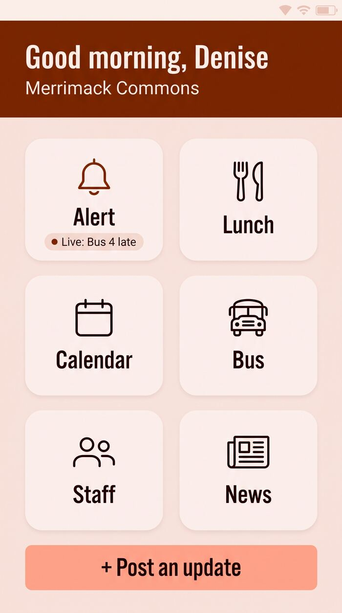
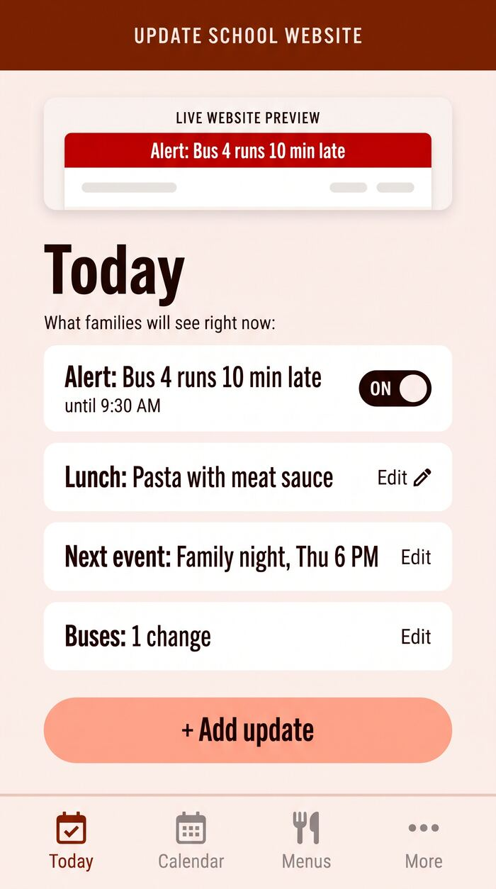
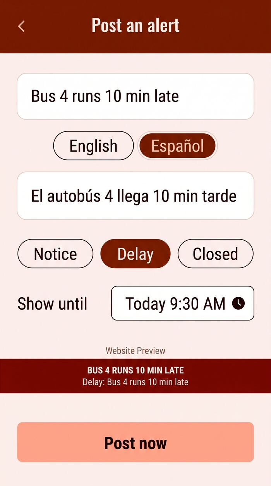
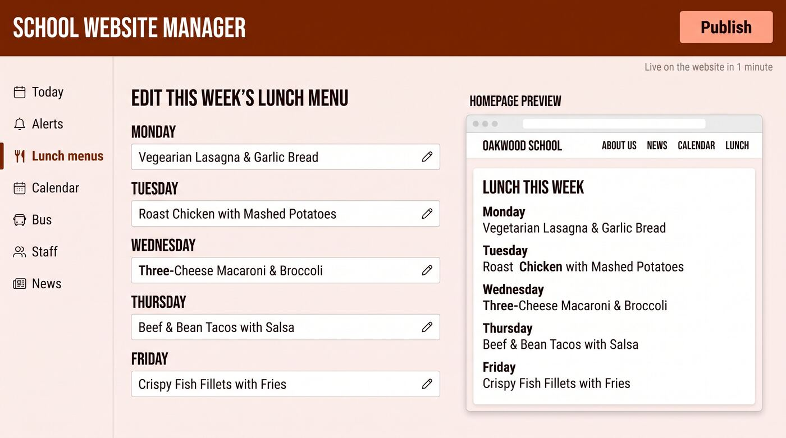
2. Real admin screens for reference
The editors and dashboards worth looking at. Tell me what you like in any of them.
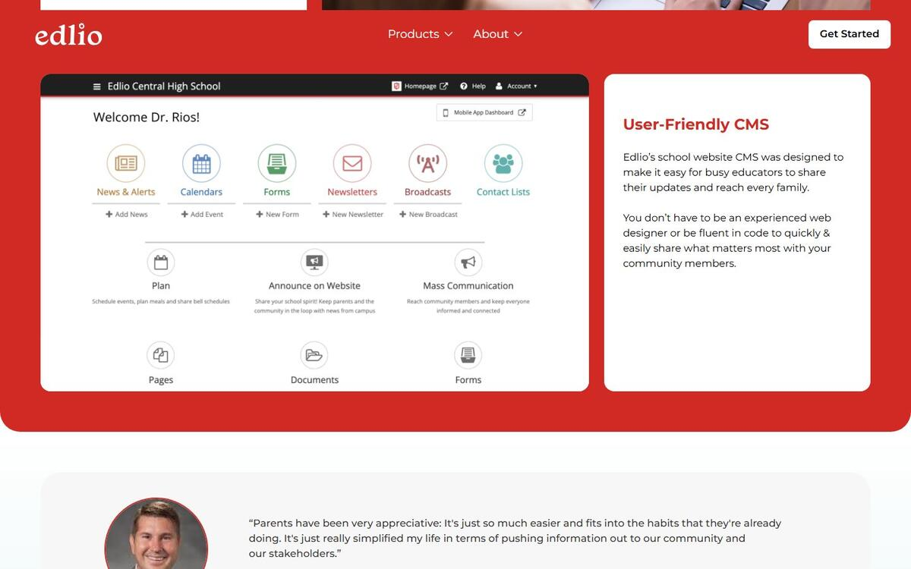
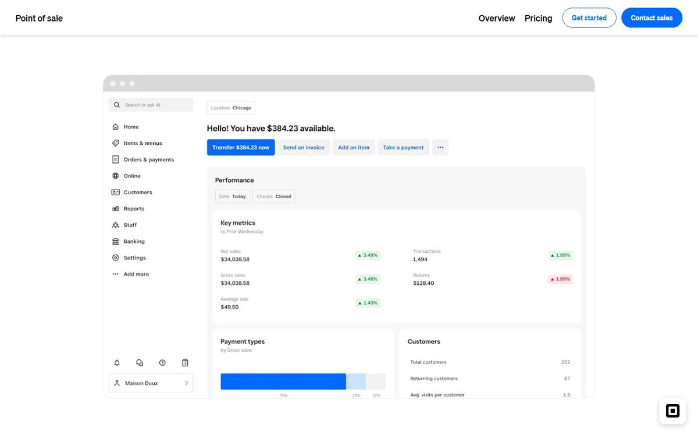
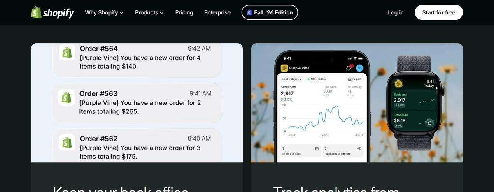
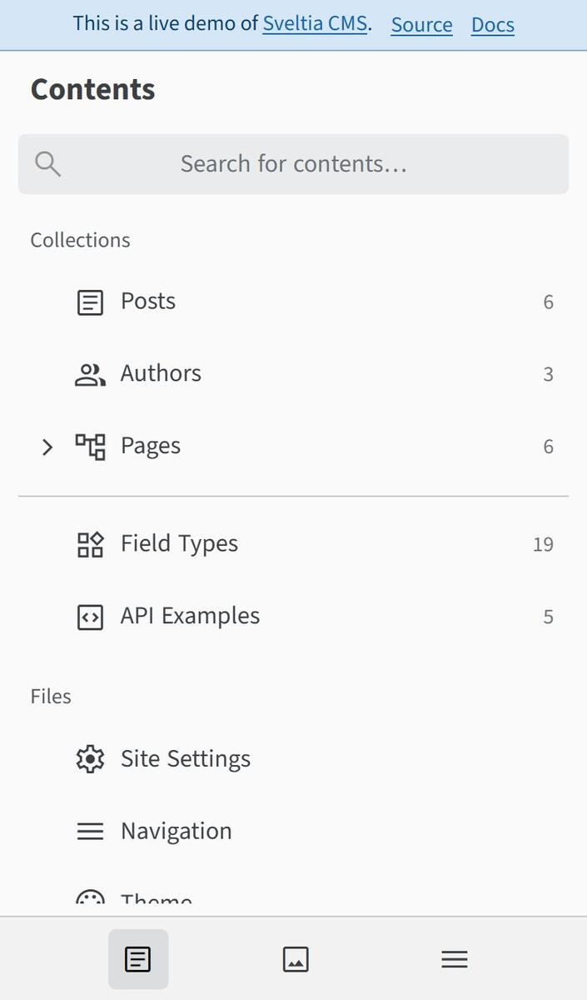
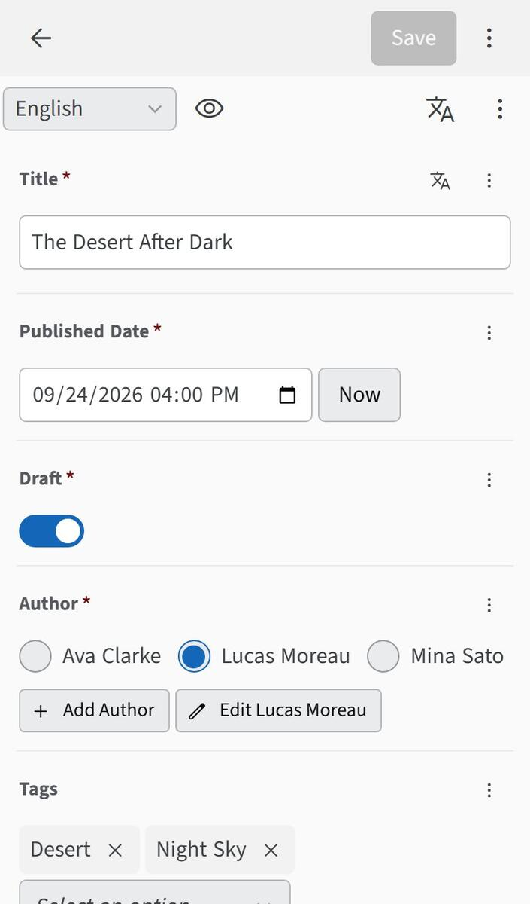
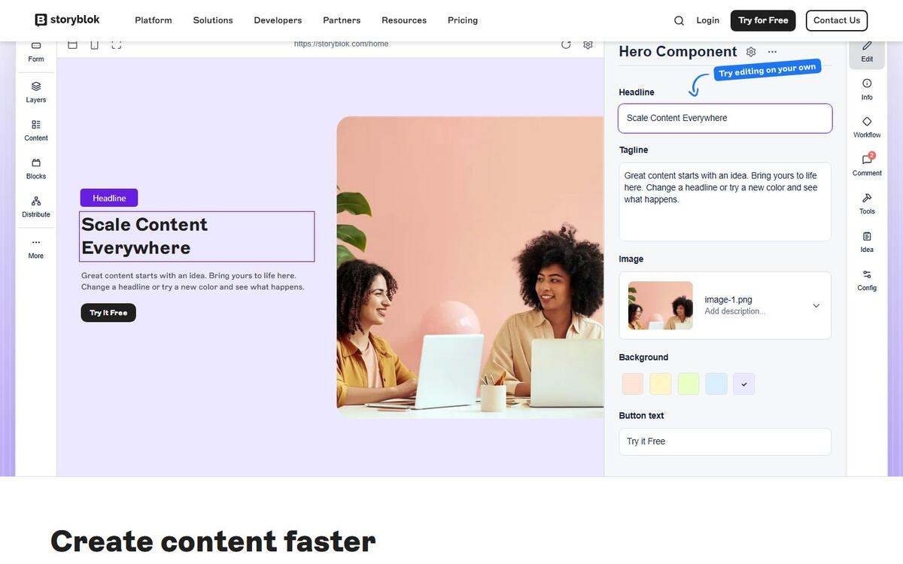
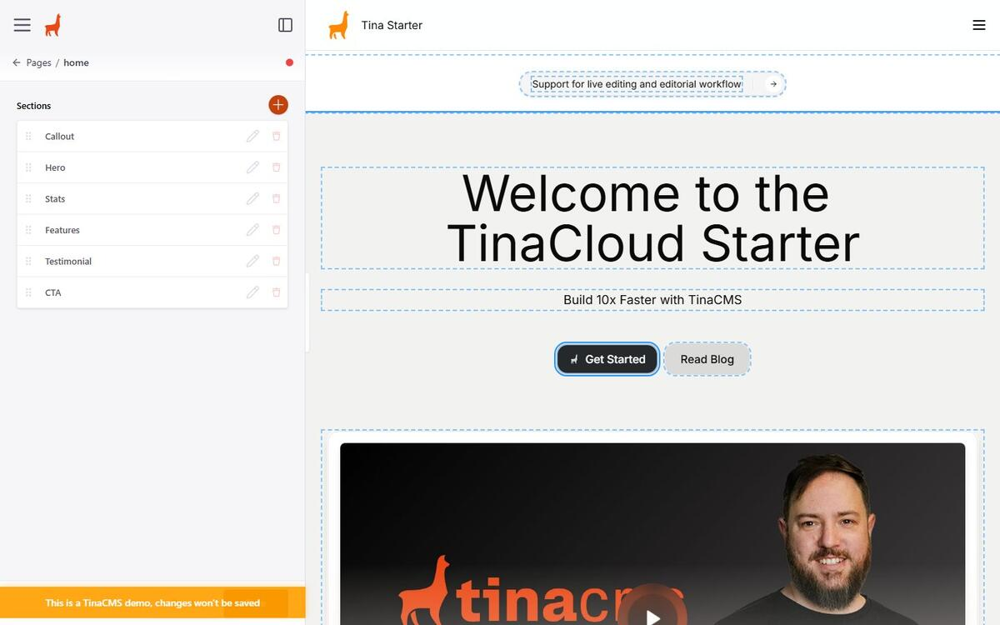
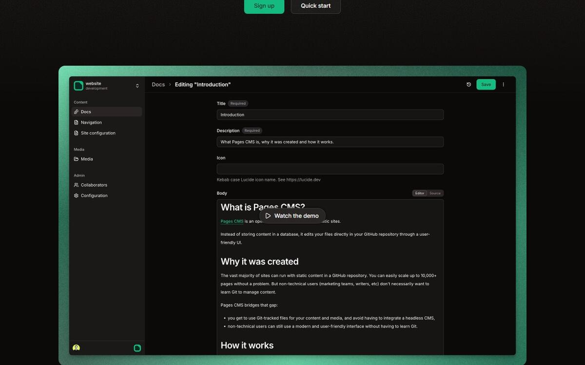
3. How it runs behind the scenes (pick one)
Option 1, my recommendation: our own small dashboard for the weekly things
Alerts, lunch, calendar, bus: one phone-first dashboard in the school's own colours (the mockups above), on Cloudflare. The office signs in with an emailed code, not a password and not GitHub. Changes show on the site within seconds, with no rebuild. Alerts expire on their own. Every field has English and Spanish.
Cost to the school: $0 extra on Cloudflare's free tier. Our side: we build it once and every client reuses it, because it's part of the page kit. That's the thing Finalsite (about $6k/yr, third-party estimate) and Apptegy ($10k+/yr) sell, at our price. Risk: we own the security and the backups, so it stays small: 4-6 content types, no page builder.
Option 2: a free editor (Pages CMS) plus our alert screen
A ready-made free editor covers lunch, events, staff and news: forms, an email invite, no GitHub. It takes 1-2 minutes until the change is live. Our one-screen alert composer (style C) handles urgent alerts, because the free editor can't schedule yet.
Cheaper for us to set up. Less "theirs": the editor looks generic, not like their school.
Option 3: Google Sheets
The office edits a shared sheet, one tab per thing, with start/end dates and EN/ES columns. The site reads it.
Free, and everyone knows Sheets. But it's awkward on a phone, one bad cell can break a page (we'd add checks), and it doesn't feel like owning a website.
| Our dashboard | Pages CMS + alert | Google Sheets | |
|---|---|---|---|
| Feels like theirs | Most (their colours, their words) | Some | Least |
| Phone | Designed for it | Vendor says yes (untested) | Awkward |
| Change goes live | Seconds | 1-2 min (alerts: seconds) | Minutes |
| Alert expires on its own | Yes | Alerts only | With date columns |
| English + Spanish | Every field | Set up per field | Extra columns |
| Cost to school | $0 extra | $0 | $0 |
| Our build / upkeep | Highest, built once and reused | Low | Low + a checker |
Sources: vendor pricing and docs pages (Nov 2026); Finalsite/Apptegy prices are third-party directory estimates. Full comparison: D:/AgenticHub/tools/worldgen/BACKEND-OPTIONS.md